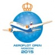

Иерусалим 2015. Чемпионат Европы
В Иерусалиме (Израиль) с 24 февраля по 8 марта проходит чемпионат Европы среди мужчин. Помимо титула и призов в нем разыгрываются 23 путевки в Кубок Мира. Первая десятка участников: Д. Навара (2735), Н. Витюгов (2735), П. Эльянов (2727), Ян Непомнящий (2714), Э. Бакро (2711), Ф. Вальехо Понс (2711), М. Матлаков (2695), А. Моисеенко (2695), Ю. Криворучко (2692), А. Рязанцев (2688). Контроль времени: 90 минут на 40 ходов, 30 минут до конца партии и 30 секунд добавления на ход, начиная с первого. Игровые дни: 24-27 февраля, 1-6 марта, 8 марта. Начало туров: 16.00 по Москве. По пятницам - в 12.00. Последний тур стартует в 14.00.
Аэрофлот-опен 2015
В Москве, в гостинице "Космос" с 27 марта по 6 апреля проходит Аэрофлот-опен. В зависимости от рейтинга шахматисты принимают участия в трех турнирах по швейцарской системе в 9 туров. 5 апреля состоится блиц-турнир. Первая десятка участников турнира А: Ш. Мамедьяров (2756), Ян Непомнящий (2714), Р. Раппорт (2709), Ф. Вальехо Понс (2708), Э. Инаркиев (2706), А. Коробов (2694), М. Матлаков (2693), К. Шашикиран (2682), В. Федосеев (2674), Б. Грачев (2673). Контроль времени: 100 минут на 40 ходов, 50 минут на следующие 20 ходов, 15 минут до конца партии и 30 секунд добавления на ход, начиная с первого. Игровые дни: 27 марта - 4 апреля. Начало туров: 15.00 по Москве.
Супертурнир Цюрих 2015
В Цюрихе (Швейцария) проходит традиционный круговой турнир с участием шести гроссмейстеров. Состав: Ф. Каруана (ЭЛО-2811), В. Ананд (2797), В. Крамник (2783), Л. Аронян (2777), Х. Накамура (2776), С. Карякин (2760). Запланированы: 1. Блиц-турнир (контроль 4+2), который определит стартовые номера. 2. Один круг в классические шахматы. Победа приносит два очка, ничья - одно. 3. Один круг в быстрые шахматы. Победа приносит одно очко, ничья - пол-очка. Победитель турнира определяется суммой очков, набранных в двух последних дисциплинах.